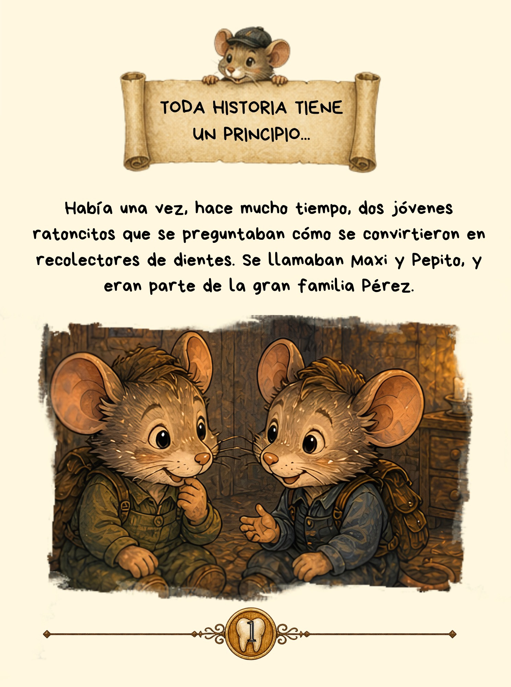

El origen del
Ratoncito Pérez
Antes de convertirse en el ratón más famoso del mundo, Pérez fue solo un pequeño ratón que vivía en Jerez.
Entre botas de vino, callejuelas antiguas y mucha curiosidad, comenzó una historia que con el tiempo llegaría a millones de niños.
Esta es su historia.
Y todo comenzó aquí.
Tres formas
de leerla.
El origen del Ratoncito Pérez está disponible en diferentes formatos para que cada lector pueda disfrutar de la historia a su manera.
Tapa blanda
La edición ligera y cómoda para leer y compartir en familia.
Tapa dura
La edición especial con 80 páginas y contenido interior exclusivo.
EDICIÓN ESPECIAL · 80 PÁGINASKindle
La historia de Pérez en formato digital, con todo el contenido ampliado.
Así es el cuento
por dentro.
Estas cinco imágenes te permiten descubrir parte del universo de Pérez. La edición de tapa dura y Kindle incluyen contenido ampliado y páginas exclusivas que no aparecen en la edición de tapa blanda.

El comienzo de la historia de Pérez.
EXCLUSIVO TAPA DURA · KINDLE
Una de las páginas interiores del cuento: la historia de un joven Luis Coloma.
EXCLUSIVO TAPA DURA · KINDLE
Jerez también se escucha, se siente y se baila.
EXCLUSIVO TAPA DURA · KINDLE
Jerez de la Frontera, el lugar donde comienza esta historia.
EXCLUSIVO TAPA DURA · KINDLE
Y para los más pequeños... ¡también hay páginas para colorear!
EXCLUSIVO TAPA DURA · KINDLE
Antes de convertirse en el ratón más famoso del mundo, Pérez solo era un pequeño ratón de Jerez.
CONTRAPORTADA¿Cuál es el origen del Ratoncito Pérez?
Si te preguntas cuál es el origen del Ratoncito Pérez o dónde nació el Ratoncito Pérez, esta página te invita a descubrir una historia infantil inspirada en la tradición y en Jerez de la Frontera.
El origen del Ratoncito Pérez es un cuento de Juan Manuel Vela Vacas que imagina las raíces de Pérez entre bodegas, barricas y las calles de Jerez. Una historia para niños y mayores que convierte una tradición conocida en una aventura llena de magia.
Descubre la tradición literaria del Ratoncito Pérez y cómo la historia de este personaje ha llegado hasta nuestros días. Una tradición española con más de 100 años de historia que ha viajado por el mundo, ahora reinterpretada en un cuento infantil por Juan Manuel Vela Vacas.
Si buscas el origen del Ratoncito Pérez, esta historia te invita a conocer una versión mágica y literaria de sus raíces.
¿Quieres conocer más sobre Pérez?
Descubre el origen de su historia y las preguntas que muchos peques se hacen cuando llega la noche del diente.
SOBRE EL ORIGEN DE PÉREZ →Una historia nacida en Jerez.
El origen del Ratoncito Pérez y la historia de Juan Manuel Vela Vacas también han sido recogidos por Diario de Jerez.
El cuento del Ratoncito Pérez que nació en Jerez
Conoce la historia detrás del libro y el proyecto de Juan Manuel Vela Vacas en Diario de Jerez.
LEER LA NOTICIA →